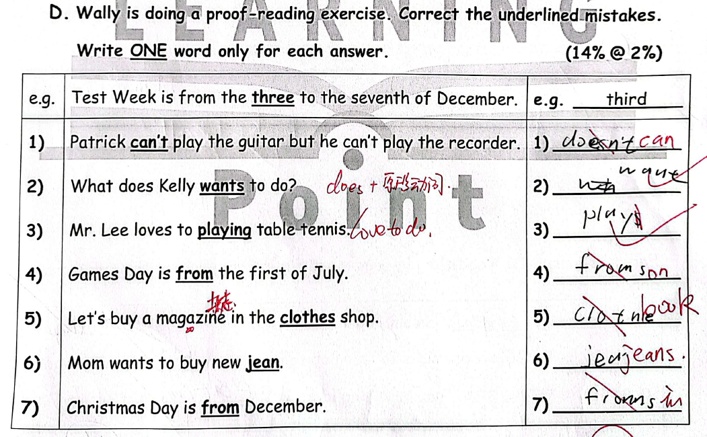
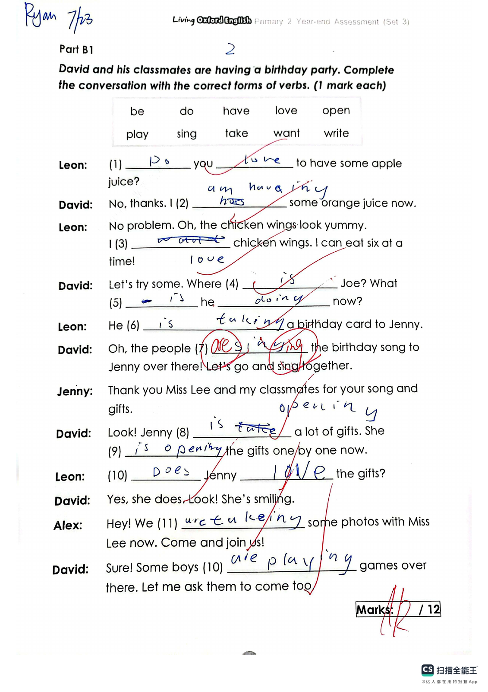
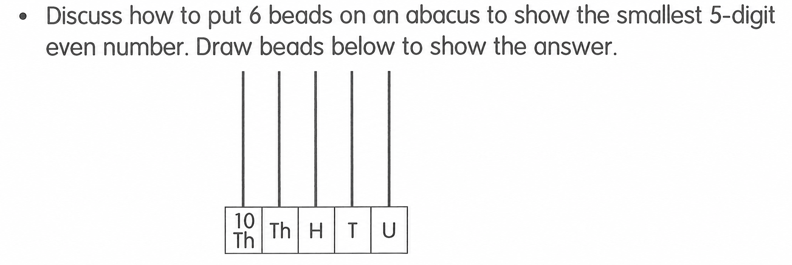

![The map below shows the routes from Alex’s home to the campsite. (a) The route between the campsite and the ____ is the shortest. This route is ____ km long. (b) The shortest route from Alex’s home to the campsite is ____ km long. The shop(s) that he goes past in this route include(s): ____. (c) The instructor needs to go from the campsite to the supermarket and the accessory store to buy something, and then go back to the campsite. He has to travel at least ____ km, and his route is: Campsite → ____ → Campsite.](assets/question_sets/math_grade3_mistakes_2026-09-22_clean/image5.png)
Answer: (a) supermarket, 5 km; (b) 12 km, bakery and supermarket; (c) 24 km: Campsite → supermarket → campsite → accessory store → Campsite, or the reverse route
已掌握
| # | 单词/词组 | 中文意思 | 例句/说明 | 已掌握 |
|---|---|---|---|---|
| noun 名词 | ||||
| 1 | gym | 健身房 | We exercise in the gym. | |
| 2 | monitor | 班长 | The monitor helps the teacher. | |
| 3 | gift | 礼物 | I got a gift. | |
| 4 | nurse | 护士 | The nurse helps patients. | |
| 5 | Wednesday | 周三 | My piano lesson is on Wednesday. | |
| 6 | Saturday | 周六 | I play football on Saturday. | |
| 7 | forest | 森林 | Many animals live in the forest. | |
| 8 | heart | 心 | My heart beats fast. | |
| 9 | reading | 阅读 | Reading helps me learn new things. | |
| 10 | dream | 梦想 | My dream is to become a doctor. | |
| verb 动词 | ||||
| 11 | move | 移动 | Please move to the left. | |
| 12 | draw | 绘画 | I draw a picture. | |
| phrase 短语 | ||||
| 13 | between ... and ... | 在……和……之间 | The park is between the bank and the school. | |
| 14 | dry the clothes | 晾衣服 | We dry the clothes on the washing line. | |
| noun phrase 名词短语 | ||||
| 15 | basketball court | 篮球场 | We play on the basketball court. | |
| 16 | school hall | 礼堂 | We sing together in the school hall. | |
| adjective 形容词 | ||||
| 17 | different | 不同的 | Our bags are different colours. | |
| 18 | pretty | 漂亮的 | The flower is pretty. | |
| verb phrase 动词短语 | ||||
| 19 | cheer sb. up | 使某人振作起来 | A funny story can cheer him up. | |
| adverb 副词 | ||||
| 20 | seldom | 很少 | I seldom eat sweets. | |
| # | 单词/词组 | 中文意思 | 例句/说明 | 已掌握 |
|---|---|---|---|---|
| adjective 形容词 | ||||
| 1 | wonderful | 精彩的 | We had a wonderful day. | |
| 2 | corresponding | 相对应的 | Write each answer in the corresponding box. | |
| 3 | careful | 小心的；细心的 | Be careful with the knife. | |
| 4 | rich | 富有的 | Now Billy was rich. | |
| 5 | tall | 高的 | How tall is the pig? | |
| 6 | extra | 额外的 | We need an extra chair for our guest. | |
| noun 名词 | ||||
| 7 | snack | 零食，小吃 | I often have a snack after school. | |
| 8 | packet | 包；小包 | I bought a packet of biscuits. | |
| 9 | character | 角色；人物 | The story has many characters. | |
| 10 | shape | 形状 | A circle is a shape. | |
| 11 | tutor | 家庭教师 | My tutor helps me study. | |
| 12 | teenager | 青少年 | My brother is a teenager. He is fifteen. | |
| 13 | rubbish | 垃圾 | We go to the beach and pick up the rubbish. | |
| 14 | carton | 纸盒；纸箱 | We bought a carton of milk. | |
| 15 | recipe | 食谱；配方 | We followed a recipe to make the cake. | |
| 16 | flavour | 味道，风味 | This soup has a delicious flavour. | |
| 17 | receipt | 收据 | Eric has a receipt from a shop. | |
| 18 | notice | 通知 | Eric is reading a school notice. | |
| noun phrase 名词短语 | ||||
| 19 | Sports Day | 运动会 | Sports Day is on 12th June at 1:30 p.m. | |
| 20 | packet of French fries | 一包薯条 | Can I have a packet of French fries? | |
| verb 动词 | ||||
| 21 | circle | 画圈 | Please circle the correct answer. | |
| 22 | hike | 远足，徒步 | We like to hike in the hills at weekends. | |
| 23 | train | 训练 | I train every day. | |
| verb phrase 动词短语 | ||||
| 24 | chatting with friends | 和朋友聊天 | He likes chatting with friends. | |
| 25 | study for my exams | 备考；复习功课 | I was sick so I didn't study for my exams. | |
| 26 | sing 'Happy Birthday' | 唱生日歌 | We sing 'Happy Birthday' to her. | |
| 27 | give away | 赠送，捐赠 | Give away our old clothes to people in need. | |
| noun/verb 名词/动词 | ||||
| 28 | exercise | 锻炼 | Exercise is good for your health. | |
| adverb 副词 | ||||
| 29 | never | 从不 | I never leave the tap running. | |
| interrogative pronoun 疑问代词 | ||||
| 30 | who | 谁 | Who gives the dog a bath every week? | |
| # | 单词/词组 | 中文意思 | 例句/说明 | 已掌握 |
|---|---|---|---|---|
| time/date 时间日期 | ||||
| 1 | March | 三月 | March is the third month. | |
| 2 | August | 八月 | August is the eighth month. | |
| 3 | November | 十一月 | November is the eleventh month. | |
| time unit 时间单位 | ||||
| 4 | month | 月 | A month has many days. | |
| directions 方向 | ||||
| 5 | east | 东 | The sun rises in the east. | |
| 6 | north | 北 | North is a direction. | |
| 7 | south | 南 | South is a direction. | |
| numbers 数字 | ||||
| 8 | one | 1 | One is 1. | |
| 9 | fourteen | 14 | Fourteen is 14. | |
| 10 | fifty | 50 | Fifty is 50. | |
| 11 | eighty | 80 | Eighty is 80. | |
| solid shape 立体图形 | ||||
| 12 | triangular prism | 三棱柱 | A triangular prism has triangular faces. | |
| plane shape 平面图形 | ||||
| 13 | quadrilateral | 四边形 | A quadrilateral has four sides. | |
| 14 | Pentagon | 五边形 | A pentagon has five sides. | |
| 15 | square | 正方形 | A square has four equal sides. | |
| # | 单词/词组 | 中文意思 | 例句/说明 | 已掌握 |
|---|---|---|---|---|
| numbers 数字 | ||||
| 1 | 3-digit number | 三位数 | A 3-digit number has three digits. | |
| operations 运算 | ||||
| 2 | borrowing | 借位 | Borrowing helps when we subtract. | |
| geometry 几何 | ||||
| 3 | angle | 角 | An angle is formed by two rays with the same endpoint. | |
| 4 | right angle | 直角 | A right angle is 90 degrees. | |
| 5 | obtuse angle | 钝角 | An obtuse angle is greater than 90 degrees and less than 180 degrees. | |
| 6 | grid | 网格 | A grid helps us find positions. | |
| 7 | line segment | 线段 | Draw a line segment. | |
| 8 | opposite side | 对边 | In a rectangle, the opposite sides are equal. | |
| question word 题目词 | ||||
| 9 | backwards | 向后；倒着 | Count backwards from 20. | |
| 10 | match | 匹配 | Match the number to the word. | |
| 11 | respectively | 分别地 | Tom and Ben have 2 and 3 books respectively. | |
| shape 形状 | ||||
| 12 | circle | 圈；圆 | Draw a circle around the answer. | |
| comparison 比较 | ||||
| 13 | fewest | 最少的 | Which group has the fewest? | |
| 14 | lighter | 更轻的 | A pencil is lighter than a brick. | |
| position 位置 | ||||
| 15 | back | 后面 | The desk is at the back of the room. | |
| 16 | arrow | 箭头 | The arrow points to the right. | |
| operations calculation 运算 | ||||
| 17 | product | 积 | The product is the answer in multiplication. | |
| 18 | quotient | 商 | The quotient is the answer in division. | |
| teacher math vocabulary 老师数学词汇 | ||||
| 19 | each | 每个 | Each child has three pencils. | |
| 20 | start | 开始 | Start counting from ten. | |
| currency money 货币 | ||||
| 21 | pay for | 支付 | I pay for the book. | |
| 22 | expensive | 昂贵的 | This toy costs $50. It is more expensive than the $20 toy. | |
| measurement 测量 | ||||
| 23 | measure | 测量 | We measure the length with a ruler. | |
| 24 | distance | 距离 | Find the distance between the two points. | |
| 25 | kilometer | 千米 | One kilometer is 1,000 meters. | |
| 26 | balance | 天平 | We use a balance to compare the weights of two objects. | |
| 句型结构 | ||||
| 27 | Angle ... is the smallest. | 角......是最小的。 | Angle B is the smallest. | |
| 28 | The lines are perpendicular to each other. | 这些线彼此垂直。 | The lines are perpendicular to each other. | |
| plane shape 平面图形 | ||||
| 29 | upper base | 上底 | The upper base of this trapezium is 4 cm long. | |
| 30 | leg | 腰（梯形的非平行边） | A leg of a trapezium is a non-parallel side. | |



